Source-defined validation command
python -m unittest discover -s tests -vObserved in .github/workflows/markdown-maintenance.yml:L39
Native source materials / 29 indexed
This index links to repository-authored course records, examples, tutorials, and technical reading. The separate browser lab is an educational surrogate; its sliders and checkpoints do not execute this repository's native engine.
Current audited native source: 92a0b4ea1d5c4c30bbc7869f7914751c1e96a0ac

Browser-lab provenance from the reconciled package: package source revision 24de0b792ecb4357b42be5bbe20183c1112b5702. This is separate from the current native source revision above.

These exact one-line commands were observed in the audited repository workflow records and link to their source location. Expected setup, tool licensing, data, and environment vary by repository; the dashboard does not execute these commands or promise a completion time.
Source-defined validation command
python -m unittest discover -s tests -vObserved in .github/workflows/markdown-maintenance.yml:L39
29 materials
Use this checklist to review transitions between grid-following, grid-forming, standby, and fault states.
checklists/inverter-mode-transition-checklist.md
Explainable smart-grid and grid-forming BESS concepts for engineers, students,
README.md
Use this checklist when a BESS dispatch plan must operate in a weak-grid, constrained-grid, islanded, or low-short-circuit-strength context.
checklists/weak-grid-storage-review-checklist.md

Use this page for explaining how active and reactive power commands should be
concepts/active-reactive-power-priority.md
Battery energy storage systems can support the grid in different control modes. This note gives a compact distinction for project discussions.
concepts/grid-forming-vs-grid-following.md
Storage dispatch is the decision process for when a battery energy storage system charges, discharges, holds reserve, or stays idle.
concepts/storage-dispatch-basics.md
This dependency-free Python example makes constrained active/reactive power
models/README.md

Battery storage can support the grid through several services. Use this comparison to align the service name, control question, and evidence request before making performance claims.
concepts/grid-support-service-comparison.md
Use this prompt to structure early BESS grid-code review discussions. It is jurisdiction-neutral and should be adapted to the applicable connection agreement, utility requirement, or grid-code document.
concepts/grid-code-evidence-prompt.md
Use this page for capturing storage availability assumptions, exclusions, and supporting event evidence. It keeps smart-grid storage discussions tied to service intent, control behavior, evidence, and operating limits.
concepts/availability-performance-template.md
Use this page for framing evidence questions for storage-supported restoration and black-start discussions. It keeps smart-grid storage discussions tied to service intent, control behavior, evidence, and operating limits.
concepts/black-start-readiness-prompts.md
Use this page for describing how storage dispatch assumptions support congestion relief claims. It keeps smart-grid storage discussions tied to service intent, control behavior, evidence, and operating limits.
concepts/congestion-relief-dispatch-note.md
Use this page for reviewing storage controller and inverter event logs after grid-service tests. It keeps smart-grid storage discussions tied to service intent, control behavior, evidence, and operating limits.
concepts/event-log-review-guide.md
Use this page for linking grid-code clauses to evidence, owners, and unresolved questions. It keeps smart-grid storage discussions tied to service intent, control behavior, evidence, and operating limits.
concepts/grid-code-traceability-matrix.md
Use this page for tracking grid-forming test cases, pass criteria, and missing evidence. It keeps smart-grid storage discussions tied to service intent, control behavior, evidence, and operating limits.
concepts/grid-forming-test-scenario-log.md
Use this checklist to confirm that each proposed grid service has traceable settings, tests, and operating limits.
checklists/grid-service-evidence-checklist.md
Use this page for framing the evidence needed for harmonic performance and power quality review. It keeps smart-grid storage discussions tied to service intent, control behavior, evidence, and operating limits.
concepts/harmonic-performance-evidence.md
Use this page for turning grid interconnection requirements into reviewable engineering questions. It keeps smart-grid storage discussions tied to service intent, control behavior, evidence, and operating limits.
concepts/interconnection-review-questions.md
Use this page for reviewing islanding risks, controls, protections, and operator actions for storage systems. It keeps smart-grid storage discussions tied to service intent, control behavior, evidence, and operating limits.
checklists/islanding-risk-review-checklist.md
Use this page for separating market-service assumptions from technical grid-service evidence. It keeps smart-grid storage discussions tied to service intent, control behavior, evidence, and operating limits.
concepts/market-service-assumption-register.md
Use this page for tracking mode transitions between grid-connected, islanded, and recovery operation. It keeps smart-grid storage discussions tied to service intent, control behavior, evidence, and operating limits.
concepts/microgrid-mode-transition-log.md
Use this page for clarifying the monitoring, alarm, dispatch, and escalation details operators need. It keeps smart-grid storage discussions tied to service intent, control behavior, evidence, and operating limits.
concepts/operator-control-room-handover.md
Use this page for capturing unanswered smart-grid storage questions for future source-backed expansion. It keeps smart-grid storage discussions tied to service intent, control behavior, evidence, and operating limits.
concepts/playbook-next-research-questions.md
Use this page for reviewing protection assumptions that affect storage interconnection and operating modes. It keeps smart-grid storage discussions tied to service intent, control behavior, evidence, and operating limits.
checklists/protection-coordination-review.md
Use this page for documenting dispatch assumptions for using storage to smooth renewable generation ramps. It keeps smart-grid storage discussions tied to service intent, control behavior, evidence, and operating limits.
concepts/renewable-smoothing-case-note.md
Use this page for defining the load, outage, SOC, and recovery assumptions behind resilience claims. It keeps smart-grid storage discussions tied to service intent, control behavior, evidence, and operating limits.
concepts/resilience-use-case-template.md
Use this page for recording conflicts when multiple grid services compete for storage capability. It keeps smart-grid storage discussions tied to service intent, control behavior, evidence, and operating limits.
concepts/service-stacking-conflict-log.md
Use this page for ordering control objectives when storage services compete for the same power or energy headroom. It keeps smart-grid storage discussions tied to service intent, control behavior, evidence, and operating limits.
concepts/storage-dispatch-priority-matrix.md
Use this page for tracking questions from system operators and the evidence used to answer them. It keeps smart-grid storage discussions tied to service intent, control behavior, evidence, and operating limits.
concepts/system-operator-query-log.md